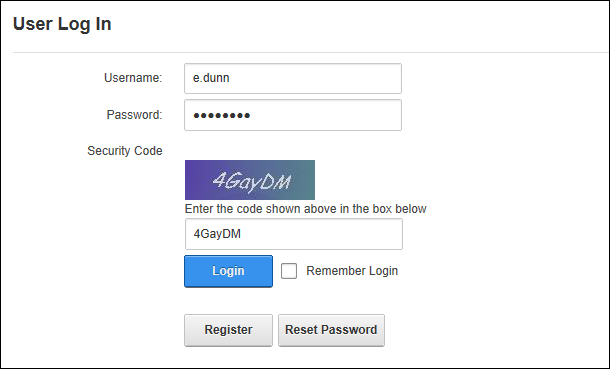

- Mark
 the check box to enable DNN authentication.
the check box to enable DNN authentication. - Unmark
 the check box to disable. Skip to Step 7.
the check box to disable. Skip to Step 7.
- Mark the check box to required users to enter a security code when they login.
- Unmark the check box to disable.
How to enable or disable the DNN default authentication system (also called Default Authentication) and set the associated authentication settings including enabling the CAPTCHA security code. Note: Unlike the other authentication providers included with DNN, the Default authentication provider displays the User Log In control as a pop-up window, rather than within the page.
Important. Do not disable DNN authentication until one or more alternative authentications systems have been enabled.

DNN authentication with CAPTCHA enabled